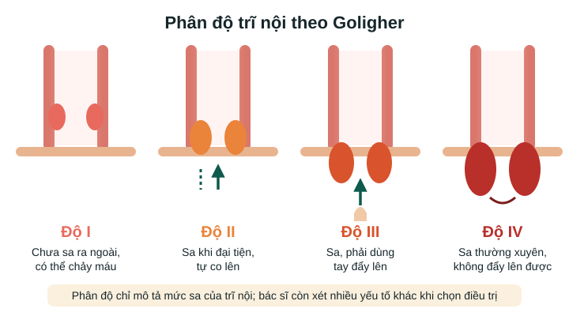

“Trĩ độ 2”, “trĩ độ 3” là những cụm từ bạn thường nghe trong phòng khám. Đó là phân độ Goligher, một cách mô tả mức độ sa của trĩ nội. Bài viết giải thích bốn mức độ, vai trò của phân độ trong điều trị và quy trình bác sĩ chẩn đoán bệnh trĩ.
Goligher là gì?
Đây là hệ thống phân độ trĩ nội dựa trên mức độ sa của búi trĩ. Phân độ giúp mô tả bệnh nhưng không thay thế việc đánh giá triệu chứng, thành phần trĩ ngoại, bệnh phối hợp và mong muốn của người bệnh.
Bốn mức độ
- Độ I: chưa sa ra ngoài, có thể chảy máu.
- Độ II: sa khi đại tiện hoặc rặn nhưng tự co lên.
- Độ III: sa và cần dùng tay đẩy lên.
- Độ IV: sa thường xuyên, không thể đẩy lên hoặc không giữ được trong ống hậu môn.
Hệ thống Goligher chủ yếu mô tả sa của trĩ nội, không phân độ cho trĩ ngoại. Trĩ độ IV thường cần đánh giá phẫu thuật, nhưng quyết định vẫn tùy từng người bệnh.

Phân độ có quyết định điều trị không?
Không hoàn toàn. Hai người cùng độ III có thể cần cách điều trị khác nhau tùy kích thước búi trĩ, thành phần ngoại, chảy máu, bệnh nền, thuốc chống đông, nguy cơ gây mê và mong muốn của người bệnh.
Quy trình chẩn đoán
Bác sĩ hỏi bệnh sử, thuốc đang dùng, tiền sử gia đình và mức độ ảnh hưởng đến sinh hoạt. Việc khám gồm quan sát hậu môn, thăm trực tràng và soi hậu môn. Thăm trực tràng không thay thế soi hậu môn khi đánh giá trĩ nội. Vì vậy bạn không nên tự xác định độ trĩ tại nhà; cần được khám đúng cách.
Khi nào cần nội soi đại trực tràng?
Bác sĩ cân nhắc nội soi khi chảy máu chưa giải thích được, thiếu máu, sụt cân, thay đổi thói quen đại tiện, tiền sử gia đình nguy cơ cao hoặc đến tuổi tầm soát. Chỉ định tùy bối cảnh lâm sàng của từng người. Xem thêm Bài 2: dấu hiệu cần đi khám.
Chuẩn bị trước khi khám
Mô tả thời điểm chảy máu, lượng máu, đau hoặc sa, táo bón hoặc tiêu chảy và thuốc đang dùng. Không tự ý ngừng thuốc chống đông hoặc thuốc kê đơn khi chưa hỏi bác sĩ.
Về hướng điều trị theo mức độ, xem điều trị tại nhà và thủ thuật, phẫu thuật.
Câu hỏi thường gặp
Độ IV có bắt buộc mổ không?
Thường cần đánh giá phẫu thuật, nhưng quyết định tùy từng bệnh nhân.
Goligher có phân độ trĩ ngoại không?
Không, hệ thống này chủ yếu mô tả sa trĩ nội.
Tự xác định độ trĩ tại nhà được không?
Không nên; cần khám đúng cách.
Tài liệu tham khảo
- Qureshi W, et al. AGA Clinical Practice Update on Diagnosis and Treatment of Hemorrhoids: Expert Review. Clinical Gastroenterology and Hepatology. 2026;24(7):1773–1781. doi:10.1016/j.cgh.2026.04.008.
- Hawkins AT, et al. The American Society of Colon and Rectal Surgeons Clinical Practice Guidelines for the Management of Hemorrhoids. Diseases of the Colon & Rectum. 2024;67(5):614–623. doi:10.1097/DCR.0000000000003276.
- SIUCP Guidelines for the management of acute and chronic hemorrhoidal disease. Annals of Coloproctology. 2024;40(4):287–320. doi:10.3393/ac.2023.00871.0124.
Lưu ý y khoa: Bài viết cung cấp thông tin giáo dục sức khỏe, không thay thế khám bệnh, chẩn đoán hoặc chỉ định điều trị cá thể. Chảy máu hậu môn không mặc nhiên là bệnh trĩ.